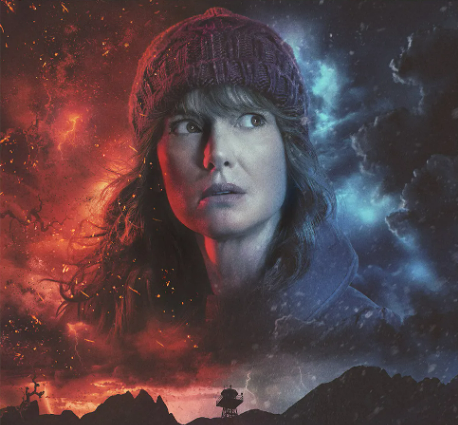
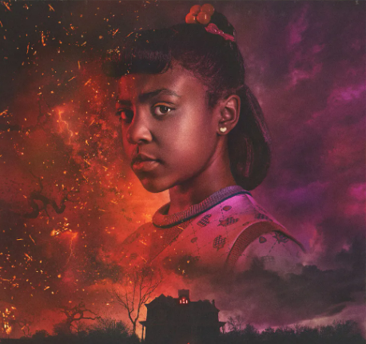
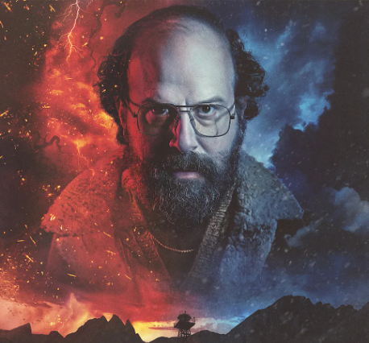

조이스 바이어스
Joyce Byers배우 : 위노나 라이더
작중에서 이혼한 싱글맘으로 외딴집에서 조나단과 윌 형제를 키우며 살고 있다. 직업은 마트 직원으로 벌이는 시원찮은 것으로 보이나 어떻게든 가족을 부양하기 위해 열심히 살고 있다. 윌이 사라지고 집 안에 초현실적인 사건이 벌어지자 혼란스러워하면서도 윌의 생존을 믿고 필사적으로 아들을 찾아 헤맨다.
짐 호퍼
James "Jim" Hopper배우 : 데이비드 하버
거구의 덩치에 강한 완력을 지닌 호킨스의 경찰서장. 첫 등장시에는 조용한 시골 마을인 호킨스의 평화에 찌들어 있는 항상 뚱한 표정에 의욕없고 게으른 경찰로 그려지는데, 실상은 행동력, 추리력, 전투력을 고루 갖춘 비범한 인물. 초반에 이런 모습을 보였던 것은 딸이 어린 나이에 질병으로 죽고 그에 연달아 부인과도 이혼하게 되며 삶의 굴곡이 많았기 때문이었던 것으로 보인다. 현직 경찰이지만 대화나 법보다 주먹이 앞서는 모습을 많이 보인다. 매사 퉁명스럽고 신경질적이지만 들춰보면 마음이 따뜻한 사람.

에리카 싱클레어
Erica Sinclair배우 : 프라이아 퍼구슨
루카스의 4살 차이 여동생. 시즌 2에서 할로윈 데이에 고스트 버스터즈 코스튬을 한 오빠를 찌질이라며 비웃는 장면으로 첫 등장한다. 오빠인 루카스를 너드라고 생각하여 매번 놀리고, 루카스 친구들에 대한 대접도 영 좋지 못한 편이다. 루카스가 가만히 있어도 마주칠 때마다 깐족대며 놀려대는데, 말빨이 어찌나 좋은지 루카스가 매번 진다.

머레이 바우먼
Murray Bauman배우 : 브렛 겔먼
사립탐정이자 저널리스트. 그리고 연애 상담가. 바버라의 부모님에 의해 고용된 인물로, 호킨스에서 일어난 의문의 사건들을 조사하는 모습으로 첫 등장한다. '러시아에서 무기로 만든 초능력 소녀가 호킨스에 침입했고 이로 인해 바버라가 죽었다'는 자신의 가설을 입증하기 위해 호킨스 경찰서에 찾아가 짐 호퍼에게 인터뷰를 요청하지만 번번히 무시당하고, 경찰서 내에서는 허무맹랑한 음모론이나 쫓아다니는 괴짜 취급을 받는다. 하지만 후에 밝혀진 바에 따르면 세부적인 사항이나 타임라인에 오류가 있었을 뿐 사건의 전체적인 진실에 꽤 근접했음이 밝혀진다. 괴짜처럼 보이는 겉모습과 달리 꽤 통찰력이 있는 편.